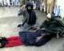

پذيرش > مقالات > خارج از چارچوب > دو دقیقه شرمساری که پاکستان را به لرزه انداخت
 فیلم سوات فیلم سوات

 دو دقیقه شرمساری که پاکستان را به لرزه انداخت دو دقیقه شرمساری که پاکستان را به لرزه انداخت
14 اردیبهشت 1388 - فاروق سوله ریا /Farooq Sulehria/ ترجمه علی عبدی - نسخه قابل چاپ
تغییر برای برابری - هنگامی که یک فیلم دو دقیقه¬ای که با تلفن همراه گرفته¬ شده¬بود به دنیای اینترنت وارد شد و هر کس که تلفن همراه داشت آن را برای همه¬ی کسانی که می¬شناخت فرستاد، پاکستان به لرزه افتاد. این فیلم خشن و تأثربرانگیز دره¬ی سوات پاکستان را به تصویر می¬کشد؛ دره¬ی زیبایی که زمانی ماه¬عسل مسافران بود و در این روزها به سرزمین فرمانروایی طالبان و بنیادگرایی سعودی بدل گشته¬است.
این فیلم که به "فیلم سوات" معروف شده دختری با پوشش برقع را نشان می¬دهد که روی زمین بی¬حرکت نگه داشته¬شده¬است. دو مرد دست و پای او را گرفته¬اند و مرد سوم – با ریش و عمامه¬ی سیاه – او را شلاق می¬زند. دختر در تقلا برای نجات خود از روی غریزه جیغ می¬کشد ("خواهش می¬کنم نزنید!") و تقاضای بخشش دارد اما بی¬فایده است.
تماشاکنندگان خاموش¬اند و¬ کاری از دستشان ساخته نیست. ظاهراً به خاطر صحنه¬ی شرم¬آوری که دارد جلویشان اتفاق می¬افتد توانایی حرکت ندارند. دختر بار دیگر به زبان مادری خود، پشتو، جیغ می¬کشد که "یا من را بکشید یا تمامش کنید". تقاضای عاجزانه¬ی دختر برای بخشودن شدن، در عوض با دستور مردی که چهره¬اش در فیلم نیست مواجه می¬شود که به مرد دیگری که پای دختر را گرفته است می¬گوید: "پاهایش را محکم بگیر." شلاق¬ها تا زمانی که به عدد 34 برسد ادامه پیدا می¬کند. هنگامی که تمام می¬شود دختر را به ساختمان سنگی آن کنار منتقل می¬کنند.
فیلم برای روزنامه¬نگاران محلی فرستاده شد. از آن جا آن¬ها از خشم بنیادگرایان می¬ترسیدند ساکت ماندند. ترس آنان توجیه¬پذیر بود. همین چند هفته¬ پیش بود که یک روزنامه¬نگار به شکل بی¬رحمانه¬ای در دره¬ی سوات کشته¬شد. مناطق دیگر پاکستان نیز "بهشت امن" خبرنگاران نیست. نزدیک به 40 خبرنگار در هشت سال گذشته در پاکستان کشته¬ شده¬اند که اکثرشان در نواحی تحت سلطه¬ی طالبان رخ داده¬است. با این حال خودسانسوریِ ناشی از ترس از طالبان، تنها دلیلی نبود که رسانه¬های گروهی این فیلم را مخفی نگه¬داشتند. ده¬ها کانال پاکستانی از هر اتفاق کوچک یک "خبر فوری" می¬سازند و برای گزارش سریع¬تر یک رویداد باهم رقابت بچگانه¬ای دارند. اما این فیلم برای روزها و روزها موفق به ورود به اتاق¬های خبر نشد زیرا تعداد زیادی از زنان و مردانِ حاضر در این رسانه¬ها با طالبان احساس هم¬دردی می¬کنند. سمر مینالله، زن مستندساز و نترس، فیلم را به رسانه¬های محلی رساند.
سمر از طریق تلفن گفت که "آن¬ها حاضر به پخش فیلم نبودند." سرانجام او فیلم را برای خبرنگاران خارجی مستقر در اسلام¬آباد فرستاد. روز دوم آوریل، بعضی روزنامه¬ها مانند گاردین خبر را با تیترهای محتاطانه¬ای منتشر کردند و بی¬بی¬سی اردو نیز خبر را روی وب¬سایت خود گذاشت. در همین حال گروه¬های مدافع حقوق زنان در لاهور و کراچی تظاهرات کردند. و به این ترتیب سکوت شکسته شد. سپس آدم¬های نان¬به¬نرخ روز خورِ رسانه¬ها برای پوشش خبر سوات یورش آوردند. سوم آوریل رسانه¬های الکترونیکی خبر را منتشر کردند و روزنامه¬های صبح چهارم آوریل نیز تمام صفحه¬های اول خود را با پرداختن به جزئیات وحشت¬آورِ رویداد به این موضوع اختصاص دادند.
خشم جهانی
پوشش رسانه¬ای این رویداد با خشم جهانی دوچندان شد. ناراحتی جهانیان آن قدر گسترده¬است که حتی احزاب دست¬راستی و اسلامی نیز برای اولین بار طالبان را محکوم کرده¬اند. هم¬چنین برای اولین بار است که گروهی از ستون¬نویسان و مدیران تلویزیونی – معروف به مجاهدین رسانه¬ها - که با طالبان همدرد بودند، دفاع از آنان را دشوار می¬بینند. تا امروز، تمام خشونت عریانی که طالبان بر قربانیان بی¬دفاع خود اعمال می¬کرد به بهانه¬ی مقاومت در برابر اشغال افغانستان توسط آمریکا توجیه می¬شد. مثلاً زمانی که هتل پنج ستاره¬ی ماریوت در اسلام¬آباد توسط یک بمب¬گذار انتحاری مورد حمله قرار گرفت، یک رسانه¬ی مجاهد معروف، این فرضیه¬ی بی¬پایه و اساس را ارائه کرد که آن هتل وسایل نظامی نیروهای آمریکایی را در خود جا داده¬بود.
مشخص شد که دختر 14 ساله به نام¬¬ "چاند"(چاند در بسیاری از زبان¬های جنوب شرقی آسیا به معنی ماه است) متهم به داشتن "رابطه" با پسر جوانی در همان خیابان به نام عدالت¬خان شده¬است. عدالت خان، که یک برقکار متخصص بود، یک روز که از خانه¬ی چاند بیرون می¬آمد توسط طالبان رؤیت شد. خانواده¬ی چاند از عدالت خواسته¬بودند که بعضی از وسایل الکتریکی¬ خانه را تعمیر کند. یک شبه¬نظامی طالبان پیش از این چاند را خواستگاری کرده بود اما خانواده¬ی او این پیشنهاد را نپذیرفته بودند. حالا زمان خوبی برای انتقام بود. در نتیجه، هم عدالت و هم چاند از خانه¬های خود بیرون کشانده شدند و شلاق خوردند. ابتدا عدالت 50 شلاق خورد و سپس چاند را با یک کمربند چرمی شلاق زدند. مسلم¬خان، سخنگوی طالبان در سوات، در حالی که به پرسش¬های خبرنگاران پاسخ می¬گفت نه تنها از این رفتار خشونت¬آمیز و خفت¬بار دفاع کرد بلکه مدعی بود که می¬بایست دختر را سنگسار می¬کردند! از آن¬جا که به گفته¬ی مسلم¬خان قبل از جاری¬ساختن شریعت توسط طالبان و در زمانی که طالبان با دولت در حال جنگ بود مجازات دختر اعمال شده¬بود در نتیجه حکمِ سنگسار نمی¬تواند از دادگاه شریعت به¬دست آید.
پیمان نامه اجازه ی تشکیل دادگاه شریعت را داد
در نتیجه¬ی عقد "پیمان صلح" بین طالبان و دولت پاکستان در 21 فوریه، دادگاه¬های شریعت دایر شدند. این دادگاه¬ها احکام را در سه روز و بدون حضور وکیل صادر می¬کنند زیرا وکلا در شریعت صلاحیت ندارند.
در حالی که نگارنده مشغول نگاشتن این خطوط است، اطلاعات بیشتری در حال انتشار است و آخرین خبر می¬گوید: طالبان، عدالت را مجبور کرده¬ که با چاند ازدواج کند. هر چه اطلاعات بیشتری به مردم برسد آن¬ها بیشتر تحریک و عصبانی می¬شوند. این خشم در حال بدل شدن به تظاهرات اعتراضی در پاکستان است. تک¬تک این اعتراض¬ها علیه طالبان مهلک¬تر از تمام حمله¬ها¬ی هواپیماهای بدون سرنشین آمریکا بر ضد آن¬هاست.
ارسال به
بالاترین
،
توییتر
،
فریندفید
،
فیسبوک
در همين بخش :
 8 مارس روزی که نمی توان از ما دریغ کرد 8 مارس روزی که نمی توان از ما دریغ کرد
با طلاق توافقی از حقارت و کتک و فحش رها شدم /گزارشی از دادگاه محلاتی: مریم مالک
تجمع مادران عزادار در رشت
تغییر ممکن است/ جلوه جواهری(26 روز پس از بازداشت کاوه مظفری)
گامهایی که با تزلزل نا آشنایند/ گرامی داشت چهلم ندا در رشت
ديگر بخش ها :
طرح یک میلیون امضا
|
مقالات
|
سایت نوشته ها
|
اخبار
|
گزارش كمپين
|
گفت و گو
|
علیه سکوت
|
كوچه به كوچه
|
نامه های شما
|
گزارش ویژه
|
گفتگو با اعضا
|
ویژه سالگرد کمپین
|
تصویر برابری
|
دل آرام علی
|
تریبون
|
مقالات
|
تاریخ شفاهی
|
خارج از چارچوب
|
کتابخانه
|
درباره کمپین
|
کمپین در شهرها
|
کمپین در بند
|
صدای تغییر
|
ویژه 22 خرداد
|
لایحه حمایت از خانواده
|
گالری
|
عشا مومنی
|
امیر یعقوبعلی
|
خدیجه مقدم
|
راحله عسگری زاده و نسیم خسروی
|
پروین اردلان،جلوه جواهری، مریم حسین خواه، ناهید کشاورز
|
زینب پیغمبرزاده
|
سعیده امین، سارا ایمانیان، محبوبه حسین زاده، ناهید کشاورز و همایون نامی
|
احترام شادفر
|
نسیم سرابندی زاده،فاطمه دهدشتی
|
وبلاگ مهمان
|
پرونده خرم آباد
|
دستگیری ها
|
مریم مالک
|
پرستو اللهیاری
|
مهرنوش اعتمادی
|
سمیه رشیدی
|
Other Languages
|
همراهان
|
«فراخوان کمپین ده روز با بهاره هدایت»
| English
|